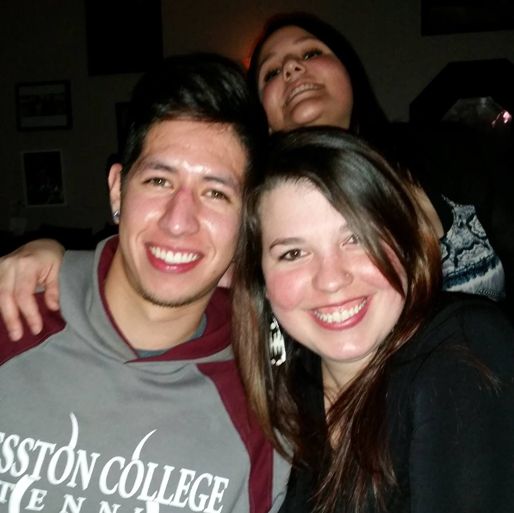

About Me

As you have seen from the title, my name is Hugo. A lot of people ask me if that is my "bar" name, but no it is actually my given name. My last name is Chavez; another hard thing to believe - Hugo Chavez Jr - and again no relation to the ex-president of Venezuela. I am originally from south Texas where this name is a lot more common. I moved to Kansas for college where my name changed pronounciation quickly. I played tennis and studied chemistry, I found out that chemistry was not really my thing. Throughout college I worked in the restaurant business and financially I was comfortable, so I continued to do that.
I am currently bartending, explains the "bar" name, but I am now pursuing a career in web development. I enjoy working in a team atmosphere and interacting with people. Apparently as a web developer you do not have to pretend to hate people and be anti-social. I am glad I won't have to be yelling at a computer by myself like I did with video games when I was younger, now I can yell at a computer screen with friends. I like creating things and the end product excites me; with all of that said I think this web development thing could be a home run, "Go Royals". Hugo can now change to be my "web" name!